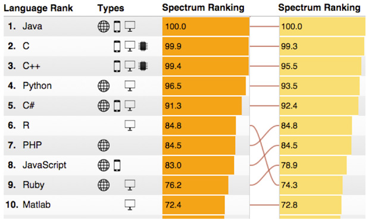

What are the most popular programming languages? The only honest answer: It depends. Are you trying to land a job at a hot mobile app startup, model electricity flows across a continent, or create an electronic art project? Languages are tools, and what's a "must have" in one domain can be a "whatever" in another. So for the second year in a row, IEEE Spectrum has teamed up with computational journalist Nick Diakopoulos to give you a popularity ranking that you can adjust to meet your own needs.
Our ranking system is driven by weighting and combining 12 metrics from 10 data sources. We believe these sources - such as the IEEE Xplore digital library, GitHub, and CareerBuilder - are good proxies for the popularity of 48 languages along a number of different dimensions. The weighting of these sources can be adjusted in our interactive Web app to give, say, more importance to languages that have turned up in job ads. Filters can be applied so that you can see only languages relevant to mobile or embedded development, for example (Access to the Web app is US $0.99.)
We put a number of preset weightings into the app for convenience; the default is the IEEE Spectrum ranking, with weights chosen to broadly represent the interests of IEEE members, and here are this year's top 10 languages from that weighting. (The column on the left is the 2015 ranking; the column on the right is the 2014 ranking for comparison.)
The big five-Java, C, C++, Python, and C# - remain on top, with their ranking undisturbed, but C has edged to within a whisper of knocking Java off the top spot. The big mover is R, a statistical computing language that's handy for analyzing and visualizing big data, which comes in at sixth place. Last year it was in ninth place, and its move reflects the growing importance of big data to a number of fields. A significant amount of movement has occurred further down in the rankings, as languages like Go, Perl, and even Assembly jockey for position.
A few languages have dropped off the rankings compared with last year's. Mostly this is due to an insufficient presence in this year's data to justify keeping them in. But in one case, an entry was dropped because we agreed with comments on last year's ranking that said we had made a mistake in categorizing it as a language rather than just a framework. This was ASP.NET, and we had originally included it because of our pragmatic approach to the definition of programming language - a lack of Turing completeness is not an absolute bar, and we make no apologies for including things like HTML - but we were too broad on that one.
A number of languages have entered the rankings for the first time. Swift, Apple's new language, has already gained enough traction to make a strong appearance despite being released only 13 months ago. Cuda is another interesting entry - it's a language created by graphics chip company Nvidia that's designed for general-purpose computing using the company's powerful but specialized graphics processors, which can be found in many desktop and mobile devices. Seven languages in all are appearing for the first time.
Learn More: C C# C++ Cuda IDL Java R Swift Top Programming Languages